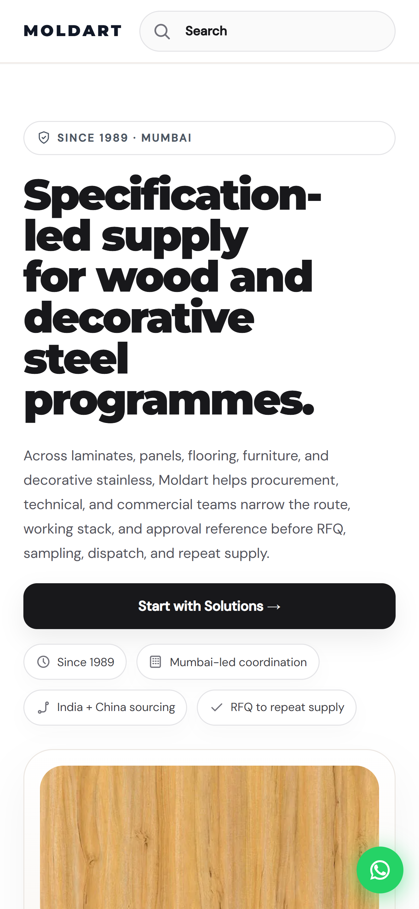
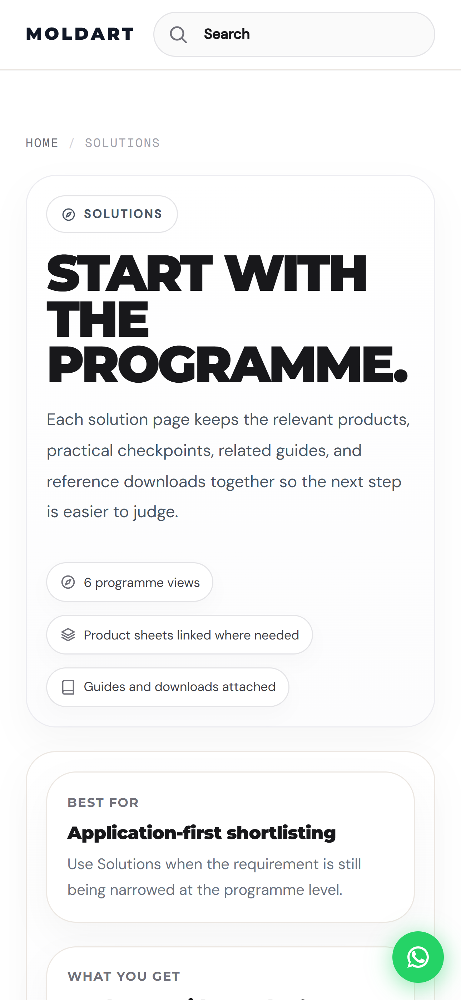
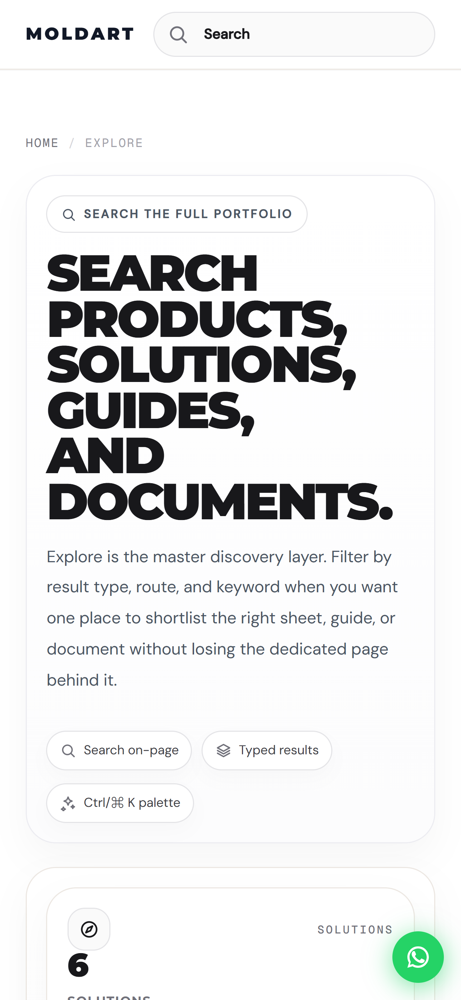
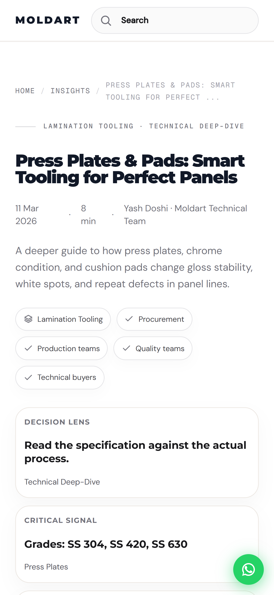
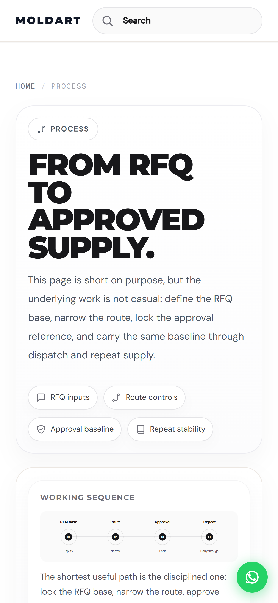

Moldart · current website
China sourcing,
clarified.
Specification-led supply for wood and decorative steel programmes.

Moldart · current website
Specification-led supply for wood and decorative steel programmes.

Solutions
Use programme-led pages to narrow the route before comparing sheets and specs.

Explore
One discovery layer for the full public portfolio.

Insights
Use deeper articles to judge tooling, quality signals, and process fit faster.

Process
Carry one approved baseline from route definition to repeat supply.
Final frame
moldartindia.com
Preview: vertical website reel concept for social sharing.
Click Play with sound to start the narration and timed scenes.